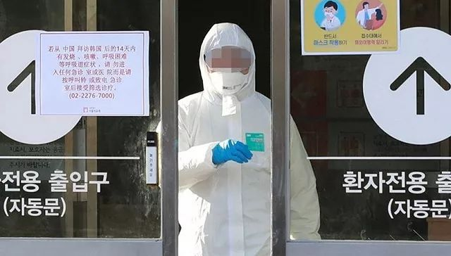
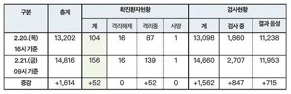

韩国出现超级传播事件，82例确诊患者曾参与千人教会活动
原文链接 备份链接 澎湃新闻记者 刘栋 实习生 董安琪 新冠病毒疫情在韩国的发展突然加速。 2月20日，韩国新增53例确诊病例，超过了过去一个月所有确诊病例总和。21日上午，韩国疾病预防控制中心（KCDC）最新通报称，再新增52例确诊病 …

2月18日，在首尔医疗院。图片来源：韩联社
记者: 刘芳
“
总理丁世均表示，将把大邱市、庆尚北道清道郡指定为传染病特别管理地区，并果断采取相关措施防控疫情。已有14660人接受检测，其中2707人的结果尚未出炉。
”
2月21日上午，韩国中央防疫对策本部通报新增52例新冠肺炎确诊病例，该国累计确诊增至156例。同时，韩国海军和空军出现了现役军人确认感染。作为防疫政策，国防部决定从22日起限制官兵外出。
界面新闻从消息人士处获知，目前韩军队内有3名现役军人确诊，分别是来自济州岛海军部队的一名22岁男子，忠清北道部队的一名31岁男子和忠清南道空军部队一名25岁男子。这一消息已在韩国中央日报得到确认。
据韩联社报道，在济州岛服役的海军士兵是韩国军队内首个被确诊的病例。他从2月13日开始到大邱休假，18日下午乘飞机返回济州并归队，20日因出现咳嗽等症状到医院筛查诊所接受病毒检测后重返部队。
在忠清北道部队服役的31岁男子为现役军官（陆军中尉），其女友为新天地大邱教会信徒。据韩国中央日报报道，这名军官有发烧等症状，目前已经被转送至国民警卫队首都医院接受治疗。
而在21日上午，在忠清南道服役的25岁空军中尉也被确诊，目前被转移到国家武装力量医院。
在韩国，大邱和庆尚北道出现大规模集体感染，成为主要疫区，特别是新天地大邱教会有数十名教徒被确诊。在今天新增的52个确诊案例中，41例发生在大邱和庆尚北道地区，其中39例与新天地大邱教会有关。总统文在寅已下令彻查此前参加大邱新天地教会礼拜活动和葬礼的人员。
另外，庆尚北道清道郡一家医院精神科的5名护士感染新冠肺炎，卫生部门对该医院600名患者和医护人员进行病毒核酸检测，16人呈阳性反应。
为防止疫情扩散，国防部决定从22日起限制官兵外出，但退役前休假、丧假等特殊情况例外。
另外，韩军正在对本月初曾到大邱和庆尚北道地区休假的官兵人数进行调查。据军方人士透露，第一轮调查中，某部队本月10日后去过大邱和庆北地区的官兵有1000多人，预计综合海陆空三军的调查结果后这一数字会更多。
韩联社表示，韩军目前有多支人数较多的部队驻扎在大邱和庆北地区，包括陆军第二作战司令部下属部队、空军军需司令部和第11战斗飞行团等。

韩国国务总理丁世均。来源：韩联社
鉴于这两个地区对韩国军队和国防的重要性，国务总理丁世均在21日上午主持中央应急处置本部扩大会议时表示，将把大邱市、庆尚北道清道郡指定为传染病特别管理地区，并果断采取相关措施防控疫情。
丁世均表示，政府将在该地区采取特别防疫措施，全面提供病床和人力物力支持。在国内累计确诊病例过百，部分地区还出现社区感染的情况下，政府将审时度势沉着应对，今后将把防疫重点由防止病毒从国外流入境内转为严防国内社区传染，尽举国之力克服疫情。
另据韩国中央防疫对策本部消息称，截至21日上午9时，除确诊患者外，韩国接受新冠病毒检测的人数为14660人，其中11953人的结果呈阴性，还有2707人的结果尚未出炉。

中央防疫本部的统计数据。
除了军队禁止外出作为防疫政策外，韩国教育部决定以全国外籍中小学生为对象调查近期是否访问过中国等情况，调查对象包括在校生和提交入学申请的学生全员。具体调查内容包括这些外国学生近期是否访问过中国大陆和港澳地区，在国外停留的学生何时回国等信息。
另外，教育部还建议各校禁止最近14天内访问过中国大陆和港澳地区的学生到校上课，校方每天负责检查两次学生的健康状态。近期访华学生数占在校生总数30%以上的学校可经与教育和防疫部门协商后推迟开学。
未经授权 禁止转载

原文链接 备份链接 澎湃新闻记者 刘栋 实习生 董安琪 新冠病毒疫情在韩国的发展突然加速。 2月20日，韩国新增53例确诊病例，超过了过去一个月所有确诊病例总和。21日上午，韩国疾病预防控制中心（KCDC）最新通报称，再新增52例确诊病 …
原文链接 备份链接 2月19日，韩国大邱市疑似出现超级传播事件的教堂附近，工作人员正在消毒。来源：中央日报 记者：潘金花 “ 大邱市一药店店员表示，MERS时期大邱没有出现确诊病例，人们并没有感到特别担心，但这次大家就像“打仗一样”，非常 …
原文链接 备份链接 韩国发生新冠肺炎超级传播事件，美国担忧日本、新加坡、韩国、泰国及越南等国及台湾地区出现社区传播 文 |《财经》特派记者 金焱 发自华盛顿 编辑 | 苏琦 当地时间2月20日，美国疾病控制与预防中心(CDC)在网站上指 …
原文链接 备份链接 韩国青瓦台。图片来源：维基百科 记者 ：肖恩 “ 韩国已累计确诊204新冠肺炎病例，是海外病例第二多的国家，仅次于邻国日本。 ” 在教会和军队相继出现新型冠状病毒肺炎感染病例后，十几名来自韩国总统府青瓦台的警卫也因为曾 …
原文链接 备份链接 首尔国立大学医院 来源：Wikicommons 记者：潘金花 “ 疫情时隔一周再度爆发，尤其是接连出现了多例感染路径尚不明确的病例，已引起了韩国卫生部门的高度警惕。 ” 在历经了一周的疫情平台期后，韩国本周再次迎来了新 …